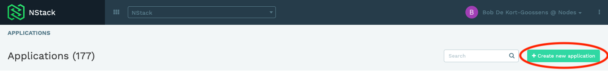
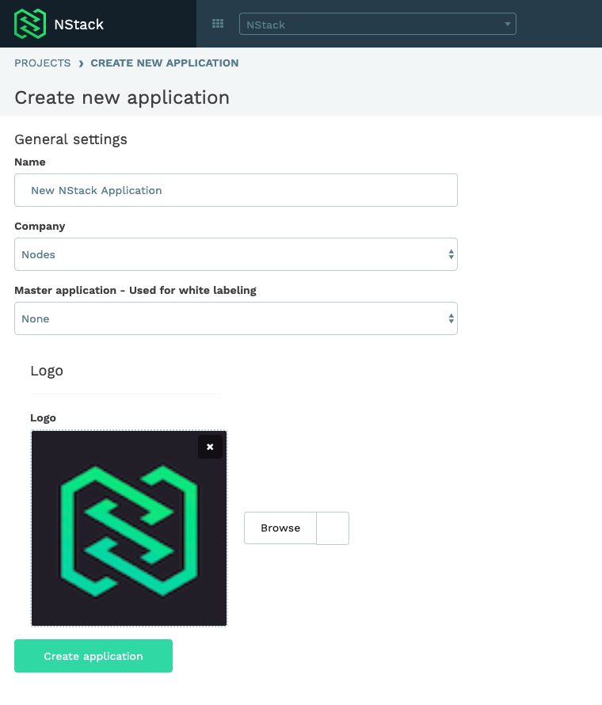
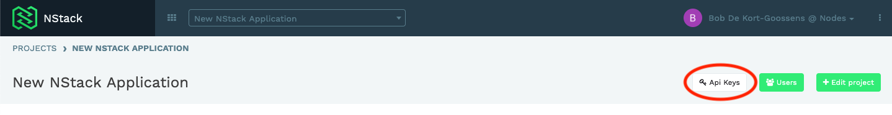
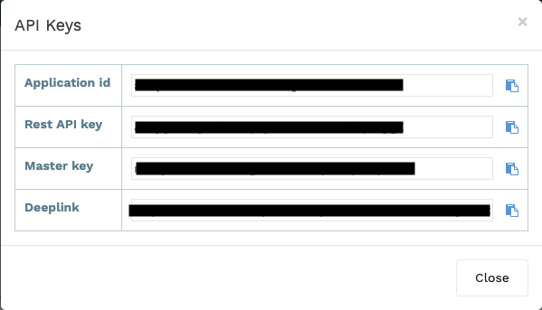
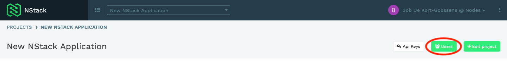
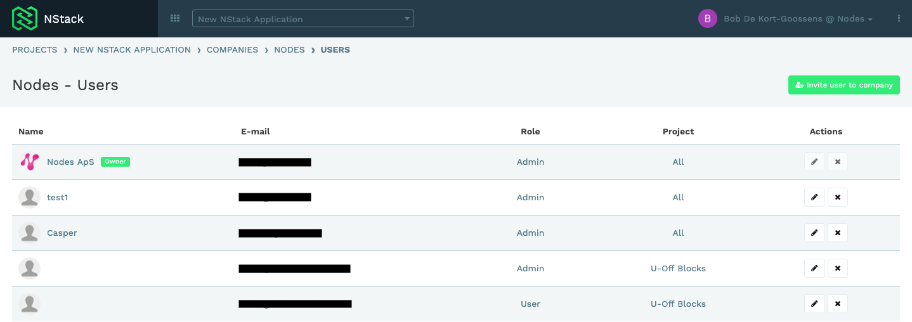
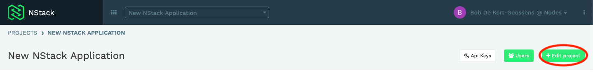
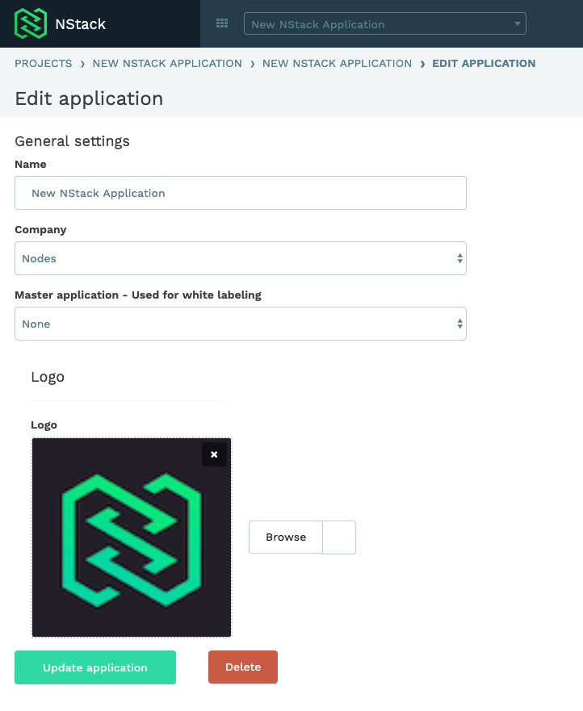

Getting started
Creating a new application
Navigate to NStack projects and press the "Create new application" button

Fill out the requested information

That's it! You now have access to all the features NStack has to offer.
Useful information
API keys
The API keys are used for setting up the sdk's and connecting to the api for this particular application.
You can find them on the selected application page
 
Users
In the user section you can manage what users have access to the application and what role/ access level they have.
See the user management guide for more information
 
Edit application
In edit application you can change the Name, company, master application and Logo for your project.
 